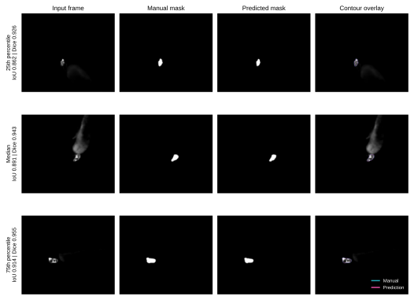
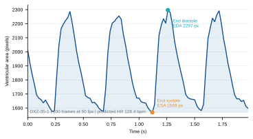
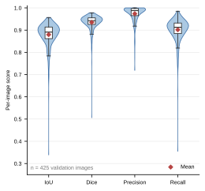
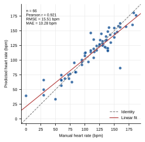

DOX Zebrafish Cardiac Analysis Workflow
This workflow describes the reproducible image-analysis example distributed with the Doxorubicin-Induced Heart Failure Dataset. It uses the project-trained ZVSegNet and HRNet checkpoints to segment the fluorescent zebrafish ventricle, derive ventricular geometry over time, calculate cardiac parameters, and estimate heart rate.
The page follows the same practical structure as the accompanying APOC2 workflow: define the input, run the analysis, retain quality-control outputs, summarize model performance, and provide analysis-ready tables and figures.
Biological Question
The associated article uses a Tg(cmlc2:eGFP) zebrafish model to evaluate
doxorubicin-induced cardiac injury. Ventricular contraction is represented by
changes in ventricular area and long/short axes across a heartbeat recording.
The resulting readouts include end-diastolic area (EDA), end-systolic area
(ESA), fractional area change (FAC), fractional shortening (FS), stroke volume
(SV), and heart rate (HR).
This workflow demonstrates how these measurements are obtained from images. It does not repeat the article's compound-screening analysis across the entire archive.
Input Data
Dataset root:
Doxorubicin_Induced_Heart_Failure_Dataset/dox/
Typical input:
<batch>/<recording>.tiff
Metadata file:
The metadata workbook contains one row per imaging file retained in the curated database. A recording used for cardiac analysis is normally a 100-frame TIFF/TIF stack acquired at 50 frames per second. SIF files require conversion or a compatible reader before they can enter the current pipeline.
Method Summary
- Select a heartbeat TIFF/TIF stack or a directory of extracted frames.
- Normalize each frame independently and resize it to the ZVSegNet input size.
- Segment the ventricular region with the bundled project-trained checkpoint.
- Retain the largest connected component and save one binary mask per frame.
- Measure ventricular area and minimum-rectangle long/short axes.
- Identify the maximal-area end-diastolic frame and minimal-area end-systolic frame.
- Calculate EDA, ESA, FAC, FS, and SV.
- Predict heart rate from the first 100 ventricular-area measurements with HRNet.
- Save CSV outputs, masks, validation metrics, and quality-control figures.
Workflow Diagram
flowchart LR
A["Heartbeat TIFF/TIF or frame directory"] --> B["Frame normalization"]
B --> C["ZVSegNet ventricular segmentation"]
C --> D["Binary masks and QC overlays"]
D --> E["Area and long/short-axis sequences"]
E --> F["EDA, ESA, FAC, FS, and SV"]
E --> G["HRNet heart-rate prediction"]
F --> H["Analysis-ready CSV files"]
G --> H
Ventricular Segmentation
ZVSegNet is the project-trained ventricular segmentation model supplied with the source materials. For each frame, the foreground probability is thresholded, resized to the original image dimensions, reduced to the largest connected component, and morphologically closed.
Outputs:
- one binary ventricular mask per frame;
- ventricular area and long/short-axis measurements;
- optional per-image IoU, Dice, precision, and recall when manual masks are available;
- representative contour overlays for visual quality control.
The comparison below shows cases near the 25th, 50th, and 75th percentiles of the validation-set IoU distribution, rather than selecting only the highest-scoring examples. Cyan indicates the manual contour and magenta the prediction. The displayed input frames were converted to grayscale without local contrast adjustment; masks were not altered for presentation. No scale bar is added because spatial calibration was not supplied for these validation frames.

Cardiac Parameter Extraction
The end-diastolic frame is the frame with maximum predicted ventricular area; the end-systolic frame is the frame with minimum predicted area. The tool then uses the article-reported formulas:
FAC = (EDA - ESA) / EDA × 100%
FS = (EDa - ESa) / EDa × 100%
SV = 4π/3 × (EDa × EDb² - ESa × ESb²)
EDa and ESa are the long axes at end diastole and end systole; EDb and
ESb are the corresponding short axes. If spatial calibration is absent, SV
is reported in pixel^3 and should be used only for relative comparisons.
The example below is a verified 100-frame, 50-fps DOX recording. It illustrates the time-resolved model output and the frames used to define EDA and ESA; it is not a group-level treatment result.

Model Validation
Segmentation
The bundled ZVSegNet checkpoint was rerun on all 425 manually annotated validation images. Mean IoU, Dice, precision, and recall were 0.8798, 0.9350, 0.9738, and 0.9018, respectively. The distributions below retain all per-image values, including difficult outliers; white boxes show the median and interquartile range, and red diamonds show the mean.

Heart Rate
The bundled HRNet checkpoint was rerun on 66 manually labeled validation
sequences. Predicted and manual heart rates had Pearson r = 0.9212, RMSE
15.5103 bpm, and MAE 10.2780 bpm. The dashed line is identity and the solid
red line is the least-squares fit.

Example Commands
Run the complete workflow for one recording:
cd dox_cardiac_analysis
conda env create -f environment.yml
conda activate dox-cardiac-analysis
bash scripts/run_dox_cardiac_workflow.sh \
configs/dox_cardiac_analysis_config.yaml \
<batch>/<recording>.tiff \
<analysis-output-directory>
Run segmentation validation when manual masks are available:
python scripts/validate_segmentation.py \
--config configs/dox_cardiac_analysis_config.yaml \
--images <validation-image-directory> \
--masks <validation-mask-directory> \
--output <segmentation-validation-output>
Run heart-rate validation:
python scripts/validate_heart_rate.py \
--workbook <heart-rate-valid.xlsx> \
--checkpoint models/hrnet_bestmodel_cnn.pkl \
--output <heart-rate-predictions.csv>
Regenerate all four workflow figures from the reproduced CSV files and representative masks:
python scripts/make_workflow_figures.py \
--analysis-root <analysis/dox_cardiac_analysis> \
--output <analysis/dox_cardiac_analysis/figures>
Expected Outputs
analysis/dox_cardiac_analysis/
├── <recording>/
│ ├── masks/
│ ├── ventricular_area_sequence.csv
│ ├── cardiac_parameters.csv
│ └── heart_rate.csv
├── segmentation_validation/
│ └── segmentation_metrics.csv
├── heart_rate_validation/
│ └── heart_rate_predictions.csv
├── figure_source/
└── figures/
├── segmentation_comparison.{svg,pdf,tiff,png}
├── segmentation_metric_distribution.{svg,pdf,tiff,png}
├── heart_rate_manual_vs_predicted.{svg,pdf,tiff,png}
└── ventricular_area_trace.{svg,pdf,tiff,png}
Scope of Screening Analysis
Full inference across the curated archive is not required to document or validate the released model. The complete validation splits provide the appropriate evidence for segmentation and heart-rate performance, and the verified TIFF example demonstrates the end-to-end output.
A new compound-screening analysis would require more than running every image: recordings must first be assigned to batch-matched control/model/treatment groups, optimization and non-screening experiments must be separated, and acquisition and spatial-calibration differences must be addressed. Therefore, the present workflow does not generate hit rankings or reproduce article-level screening statistics. Full-dataset inference should be undertaken only if a separate per-recording phenotype table and a prespecified batch-aware screening analysis are desired.
Reproducibility and Interpretation Notes
- The segmentation checkpoint reproduces the supplied results only with the
original single-frame BatchNorm convention (
batchnorm_mode: batch). - Segmentation statistics use 425 validation images; heart-rate statistics use 66 validation sequences.
- The area curve is one representative recording and is not biological replication or evidence of a treatment effect.
- No confidence interval is claimed from a single trained checkpoint; the distributions show per-image variability, not variability across training seeds.
- Representative images are traceable to the validation data and were chosen by metric percentile.